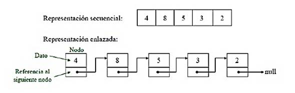

Manual de la asignatura
ESD-ES
El alumno codificará estructuras de datos y métodos de ordenamiento y búsqueda a partir del cálculo de factibilidad computacional para la gestión de datos.
Evaluación
Saber

Más

Saber hacer

Más
Ser

Bibliografía
TEMA 2 - Introducción
Breve introducción
Las estructuras de datos definen la forma en que los datos se organizan en la memoria para el acceso rápido y eficiente, mientras que los algoritmos son un conjunto de instrucciones para resolver problemas al manipular estas estructuras de datos. Diseñar un algoritmo eficiente es una habilidad muy importante que toda empresa de software persigue, por ejemplo Microsoft, Google, Facebook, etc.
Un algoritmo es un conjunto de pasos para realizar una tarea. Un algoritmo es un programa de computadora, es un conjunto de pasos que se aplican sobre un conjunto de entrada para producir un conjunto de resultados.
TEMA 3 - Análisis asintótica
TEMA 1 - C# Windows Forms controls
Un buen libro para aprender, click en él

TEMA 2 - Principios de POO
Ocupamos el siguiente libro, click en la imágen
TEMA 3 - Lista enlazada simple
La Lista Enlazada Simple es la más fundamental estructura de datos basada en punteros, y del concepto fundamental de ésta derivan las otras estructuras de datos.
